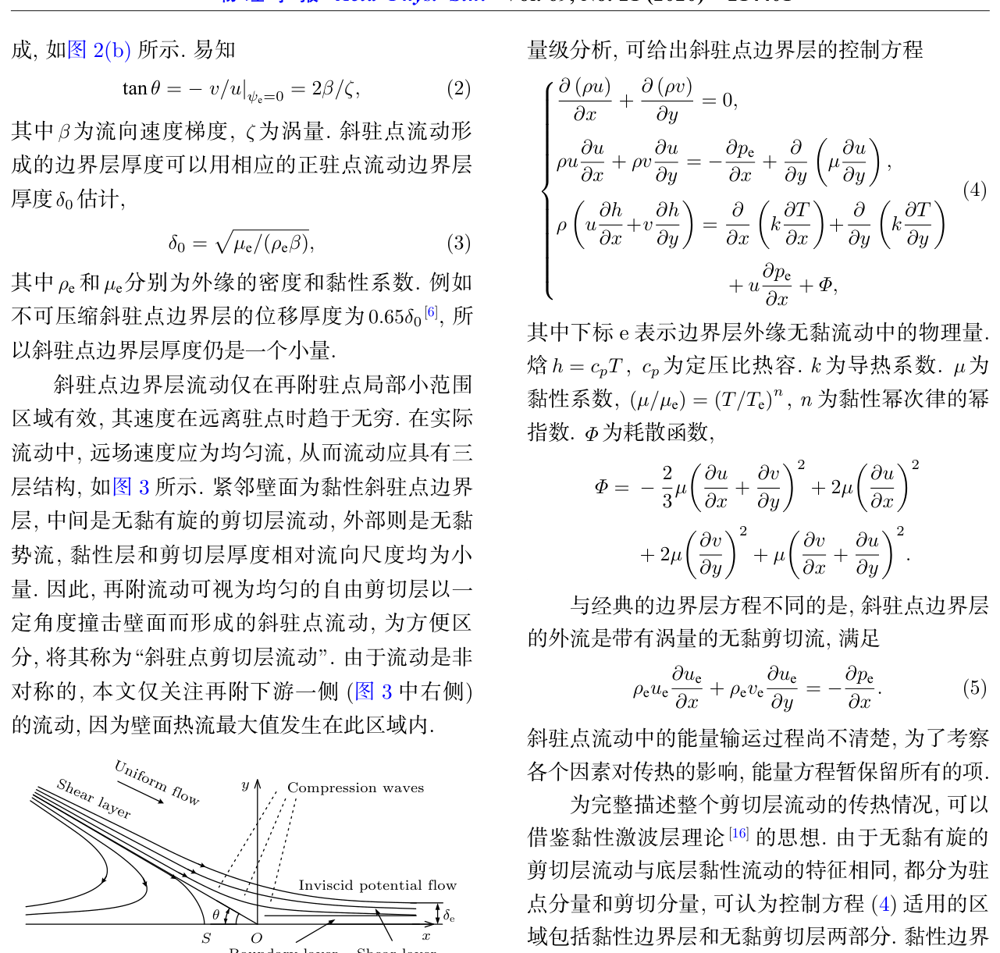
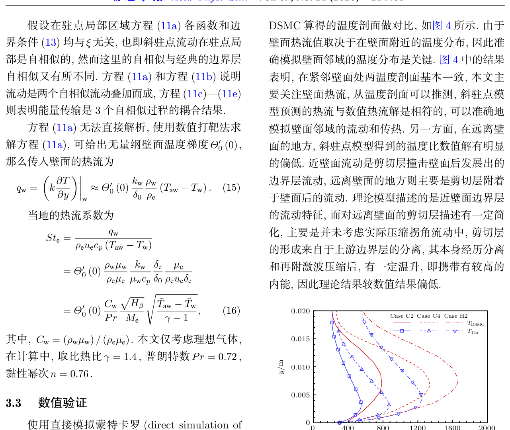
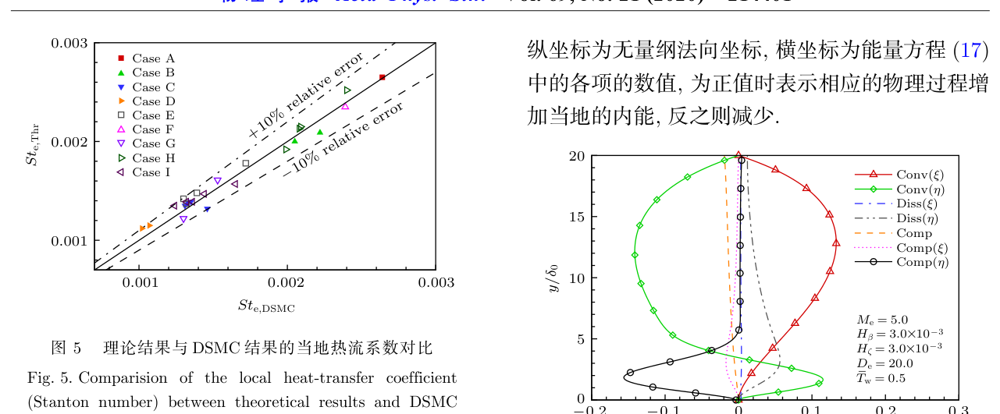
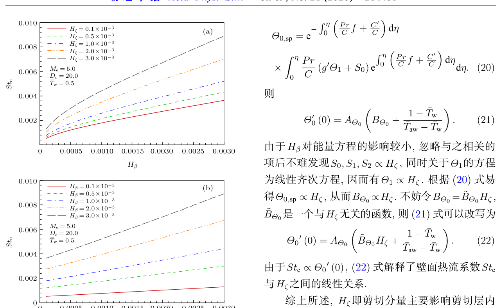

01中文摘要
高速流体以一定角度冲击壁面可简化为斜驻点流动，包括正驻点分量和剪切流动分量。以往研究多集中于不可压缩斜驻点流动，本文针对高速可压缩斜驻点流动模型给出新的自相似求解方案。与数值结果对比表明，该模型能很好地模拟高超声速再附产生的均匀剪切层撞击壁面流动。通过比较能量输运与做功项，作者发现斜驻点流动的剪切分量带来较强压缩和耗散效应，形成显著的流向对流传热，使再附后近壁流体温度迅速升高，最终产生高壁面热流。参数分析表明，壁面热流系数与无量纲壁面温度梯度和边界层厚度相关，前者主要受剪切分量参数控制，后者与驻点分量参数负相关。
原始摘要（英文/原文）
高速流体以一定角度冲击壁面可以简化为斜驻点流动,包括正驻点流动分量和剪切流动分量.以往研究集中在不可压缩的斜驻点流动,本文针对高速可压缩的斜驻点流动模型,给出了新的自相似求解方案.通过与数值结果对比验证,发现该模型能很好地模拟高超声速再附产生的均匀剪切层撞击壁面流动.通过对比流动中能量输运项和做功项的贡献,发现斜驻点流动的剪切分量带来较强的压缩效应和耗散效应,造成流动具有显著的流向对流传热,表现为再附后近壁流体温度迅速升高,最终产生壁面上的高热流值.参数分析表明壁面热流系数与无量纲壁面温度梯度和边界层厚度相关,前者主要受斜驻点剪切分量参数控制,后者与驻点分量参数呈负相关.
02阅读说明
理论分析（半解析半数值）研究，全文12页。材料含完整正文、附录表A1/A2与8张抓取图。PDF文本层公式因双栏混排严重乱码，已用原PDF第4–9页逐式核对，符号与式号可确认；DSMC的网格、分子数、碰撞模型与统计不确定度未给出。图4、图5为验证图，图6为能量收支，图7–图9为参数扫描。信息完整度较高。 文章类型：期刊
03一句话核心与三句话摘要
构建可压缩斜驻点剪切层自相似解，表明剪切分量的压缩与耗散主导再附壁面高热流。
- 已有斜驻点理论多针对不可压缩流动且未考虑传热，高速可压缩斜驻点流动的压缩-耗散耦合与再附壁面热流机制尚缺系统研究。 原文明确
- 将再附流动模化为均匀剪切层倾斜撞击壁面，用类Howarth-Dorodnitsyn变换、驻点加剪切流函数叠加和温度二次分布建立自相似方程组，并以25个M∞=9–15、拐角21°–30°的DSMC压缩拐角算例验证。 AI概括
- 近壁温度剖面与峰值热流系数同DSMC吻合（最大相对误差小于10%）；剪切分量参数Hζ主导压缩与耗散并使Ste随其线性增大，驻点分量通过边界层厚度使Ste∝√Hβ。 原文明确
04核心内容清单
| 要点 | 类型 | 重要性 | 原文依据 | 属性 |
|---|---|---|---|---|
| 斜驻点流动由正驻点流动与均匀剪切流叠加，外缘流函数ψe=βxy+½ζy²，零流线倾角满足tanθ=2β/ζ。 | 模型定义 | A | 第2节，PDF第3–4页，式(1)(2) | 原文明确 |
| 再附流动按三层结构模化：黏性斜驻点边界层、无黏有旋剪切层、无黏势流；正驻点边界层厚度δ0=√(μe/(ρeβ))作为尺度，斜驻点边界层厚度仍为小量。 | 模型假设 | A | 第2节，PDF第4页，式(3)，图3 | 原文明确 |
| 控制方程保留完整能量方程（含压缩做功u∂pe/∂x与耗散函数Φ），外缘为带涡量的无黏剪切流，与经典边界层不同。 | 控制方程 | A | 第3.1节，PDF第4页，式(4)(5) | 原文明确 |
| 用类Howarth-Dorodnitsyn变换(ξ,η)把可压缩动量方程化为不可压缩形式，并假设ψ=ζδ0²(ξf+g)；温度沿流向取二次分布Θ0+Θ1ξ+Θ2ξ²。 | 求解方法 | A | 第3.2节，PDF第4–5页，式(7)–(9) | 原文明确 |
| 得到两个动量自相似方程与三个能量自相似方程(11a–e)、源项(12)、边界条件(13)；Θ0'(0)由数值打靶求得，壁面热流与Ste由式(15)(16)给出。 | 推导结果 | A | 第3.2节，PDF第5–6页，式(11)–(16) | 原文明确 |
| DSMC验证：紧邻壁面温度剖面基本一致，远离壁面理论温度偏低；峰值热流系数与DSMC最大相对误差小于10%。 | 验证 | A | 第3.3节，PDF第6–7页，图4、图5 | 原文明确 |
| 能量收支：远离壁面流向对流为正、法向对流为负，压缩作用显著；近壁流向剪切耗散很强；对流与导热只重分配能量，压缩与耗散是内热源。 | 机理 | A | 第4.1节，PDF第7页，式(17)，图6 | 原文明确 |
| 提高Hβ和Hζ均提高剪切层温度，但Hζ影响更显著；Hβ从10^-4增至2×10^-3仅使Θ0'(0)增大约10%。 | 参数影响 | A | 第4.2节，PDF第8页，图7、图8 | 原文明确 |
| 壁面热流系数随Hβ和Hζ均增大，且Ste∝√Hβ、与Hζ近似线性。 | 参数规律 | A | 第4.2节，PDF第8–9页，图9 | 原文明确 |
| 线性化解给出Ste=Stβ(1+φζ)：Stβ由驻点分量贡献、与剪切分量无关，φζ为剪切分量增量且正比于Hζ。 | 理论分解 | A | PDF第9页，式(23)–(25) | 原文明确 |
| Hζ=0时φζ=0，模型退化为经典驻点边界层热流qw=AΘ0Pr^-1√(ρeμeβ)cp(Taw−Tw)，与经典理论一致。 | 极限检验 | B | PDF第9页，式(23)后 | 原文明确 |
| 实际再附流动中Hβ比Hζ小约一个量级，与Hβ相关的能量项可忽略；Hβ<4.5×10^-4时简化方程热流偏差不超过5%。 | 适用条件 | B | PDF第10页，第5节前 | 原文明确 |
05引言：研究问题与领域缺口
高速流体以一定角度撞击壁面时快速滞止、动能转为内能，形成强壁面热流，可简化为正驻点分量与均匀剪切分量叠加的斜驻点流动。经典驻点边界层理论（van Driest、Lees、Fay-Riddell，作者引文[2–4]）只处理对称正驻点；Stuart、Tamada、Dorrepaal、Tooke-Blyth（[6–9]）解决了不可压缩斜驻点流动但未涉及传热，Lyell（[10]）仅假设温度分布与速度分布相似。李邦明（[5]）首次用斜驻点简化模型求解高超声速再附流动，但能量方程过于简化，未讨论流动传热机制。实际再附流动伴随强激波-边界层干扰，长期依赖数值模拟，缺乏对能量输运机制与壁面热流规律的认识。本文目标是建立并求解完整可压缩斜驻点流动方程，分析流场内部及流体-固壁传热机制，为高超声速再附局部高热流预测提供方案。适用边界为再附驻点局部小范围、且只取再附下游一侧（图3右侧），因为壁面热流最大值出现在该区域。
06流动条件与几何构型
| 项目 | 数值/描述 | 依据 | 备注 |
|---|---|---|---|
| 气体与输运模型 | 理想气体；γ=1.4；Pr=0.72；黏性幂次n=0.76；μ/μe=(T/Te)^n | 第3.3节，PDF第6页 | |
| 参考温度法 | T*/Te=0.42+0.032Me²+0.58Tw/Te；C*=(ρ*μ*)/(ρeμe)；上标*为参考温度下的量 | 第3.2节，PDF第5页 | |
| 位移厚度系数 | cδ=(0.65+1.47(γ−1)/2·Me²+1.60(Tw−Taw)/Te)√C*；不可压缩cδ≈0.65 | 第3.2节，PDF第5页，式(10a)后 | |
| 能量收支典型算例（图6） | Me=5.0；Hβ=3×10^-3；Hζ=3×10^-3；De=20；T̄w=0.5 | 第4.1节，PDF第7页 | |
| 图7(a) Hβ扫描 | Hβ=2.0,2.5,3.0,3.5,4.0×10^-3；Hζ=3×10^-3；Me=5.0；De=20；T̄w=0.5 | 图7，PDF第8页 | |
| 图7(b) Hζ扫描 | Hζ=2.0,2.5,3.0,3.5,4.0×10^-3；Hβ=3×10^-3；Me=5.0；De=20；T̄w=0.5 | 图7，PDF第8页 | |
| 图8参数范围 | Hβ从0到2×10^-3（固定Hζ=1×10^-3）；Hζ从0到2×10^-3（固定Hβ=1×10^-3）；Me=5.0；De=20；T̄w=0.5 | 图8，PDF第8页 | |
| 图9(a) Hβ扫描 | Hβ=0.1,0.5,1.0,2.0,3.0×10^-3；Hζ=1.0×10^-3；Me=5.0；De=20；T̄w=0.5 | 图9，PDF第9页 | |
| 图9(b) Hζ扫描 | Hζ=0.1,0.5,1.0,2.0,3.0×10^-3；Hβ=1.0×10^-3；Me=5.0；De=20；T̄w=0.5 | 图9，PDF第9页 | |
| DSMC算例A1来流 | M∞=9；ReL=1×10^4；θ=25°；T∞=60 K；Tw=300 K；L=1 m | 表A1、表A2，PDF第10–11页 | 再附局部：Me=4.82；Hβ=1.79×10^-4；Hζ=12.25×10^-3；De=15.2；T̄w=1.64；θ=13.6° |
| DSMC算例B1来流 | M∞=9；ReL=2×10^4；θ=25°；T∞=60 K；Tw=300 K；L=1 m | 表A1、表A2，PDF第10–11页 | 再附局部：Me=4.60；Hβ=1.60×10^-4；Hζ=10.27×10^-3；De=16.4；T̄w=1.51；θ=14.0° |
| DSMC算例B2来流 | M∞=11；ReL=2×10^4；θ=25°；T∞=60 K；Tw=300 K；L=1 m | 表A1、表A2，PDF第10–11页 | 再附局部：Me=5.57；Hβ=1.16×10^-4；Hζ=6.45×10^-3；De=19.9；T̄w=1.43；θ=15.0° |
| DSMC算例C1来流 | M∞=9；ReL=5×10^4；θ=25°；T∞=60 K；Tw=300 K；L=1 m | 表A1、表A2，PDF第10–11页 | 再附局部：Me=4.69；Hβ=0.97×10^-4；Hζ=5.21×10^-3；De=23.1；T̄w=1.57；θ=15.3° |
| DSMC算例C2来流 | M∞=11；ReL=5×10^4；θ=25°；T∞=60 K；Tw=300 K；L=1 m | 表A1、表A2，PDF第10–11页 | 再附局部：Me=5.44；Hβ=0.78×10^-4；Hζ=3.89×10^-3；De=25.6；T̄w=1.37；θ=15.8° |
| DSMC算例C3来流 | M∞=13；ReL=5×10^4；θ=25°；T∞=60 K；Tw=300 K；L=1 m | 表A1、表A2，PDF第10–11页 | 再附局部：Me=6.15；Hβ=0.66×10^-4；Hζ=3.22×10^-3；De=27.5；T̄w=1.23；θ=16.0° |
| DSMC算例C4来流 | M∞=15；ReL=5×10^4；θ=25°；T∞=60 K；Tw=300 K；L=1 m | 表A1、表A2，PDF第10–11页 | 再附局部：Me=6.55；Hβ=0.68×10^-4；Hζ=3.10×10^-3；De=27.7；T̄w=1.04；θ=16.5° |
| DSMC算例D1来流 | M∞=13；ReL=1×10^5；θ=25°；T∞=60 K；Tw=300 K；L=1 m | 表A1、表A2，PDF第10–11页 | 再附局部：Me=6.00；Hβ=0.51×10^-4；Hζ=2.32×10^-3；De=32.4；T̄w=1.18；θ=16.6° |
| DSMC算例D2来流 | M∞=15；ReL=1×10^5；θ=25°；T∞=60 K；Tw=300 K；L=1 m | 表A1、表A2，PDF第10–11页 | 再附局部：Me=6.28；Hβ=0.51×10^-4；Hζ=2.17×10^-3；De=32.9；T̄w=0.96；θ=17.0° |
| DSMC算例E1来流 | M∞=11；ReL=5×10^4；θ=21°；T∞=60 K；Tw=297 K；L=1 m | 表A1、表A2，PDF第10–11页 | 再附局部：Me=5.90；Hβ=0.57×10^-4；Hζ=4.93×10^-3；De=23.0；T̄w=1.56；θ=12.1° |
| DSMC算例E2来流 | M∞=11；ReL=5×10^4；θ=24°；T∞=60 K；Tw=297 K；L=1 m | 表A1、表A2，PDF第10–11页 | 再附局部：Me=5.60；Hβ=0.71×10^-4；Hζ=4.07×10^-3；De=25.1；T̄w=1.42；θ=14.8° |
| DSMC算例E3来流 | M∞=11；ReL=5×10^4；θ=27°；T∞=60 K；Tw=297 K；L=1 m | 表A1、表A2，PDF第10–11页 | 再附局部：Me=5.18；Hβ=0.93×10^-4；Hζ=3.86×10^-3；De=25.4；T̄w=1.25；θ=17.2° |
| DSMC算例E4来流 | M∞=11；ReL=5×10^4；θ=30°；T∞=60 K；Tw=297 K；L=1 m | 表A1、表A2，PDF第10–11页 | 再附局部：Me=4.71；Hβ=1.28×10^-4；Hζ=3.99×10^-3；De=24.5；T̄w=1.07；θ=19.7° |
| DSMC算例F1来流 | M∞=15；ReL=2×10^4；θ=30°；T∞=60 K；Tw=300 K；L=1 m | 表A1、表A2，PDF第10–11页 | 再附局部：Me=5.71；Hβ=1.75×10^-4；Hζ=5.17×10^-3；De=21.0；T̄w=0.82；θ=20.2° |
| DSMC算例G1来流 | M∞=15；ReL=5×10^4；θ=24°；T∞=60 K；Tw=300 K；L=1 m | 表A1、表A2，PDF第10–11页 | 再附局部：Me=7.05；Hβ=0.50×10^-4；Hζ=2.61×10^-3；De=30.4；T̄w=1.19；θ=15.5° |
| DSMC算例G2来流 | M∞=15；ReL=5×10^4；θ=27°；T∞=60 K；Tw=300 K；L=1 m | 表A1、表A2，PDF第10–11页 | 再附局部：Me=5.99；Hβ=0.90×10^-4；Hζ=3.40×10^-3；De=26.1；T̄w=0.88；θ=18.0° |
| DSMC算例H1来流 | M∞=11；ReL=2×10^4；θ=25°；T∞=100 K；Tw=300 K；L=1 m | 表A1、表A2，PDF第10–11页 | 再附局部：Me=5.48；Hβ=1.17×10^-4；Hζ=6.40×10^-3；De=18.9；T̄w=0.83；θ=15.1° |
| DSMC算例H2来流 | M∞=11；ReL=2×10^4；θ=25°；T∞=150 K；Tw=300 K；L=1 m | 表A1、表A2，PDF第10–11页 | 再附局部：Me=5.38；Hβ=1.22×10^-4；Hζ=6.52×10^-3；De=18.2；T̄w=0.54；θ=15.3° |
| DSMC算例H3来流 | M∞=11；ReL=2×10^4；θ=25°；T∞=200 K；Tw=300 K；L=1 m | 表A1、表A2，PDF第10–11页 | 再附局部：Me=5.46；Hβ=1.12×10^-4；Hζ=5.90×10^-3；De=18.9；T̄w=0.41；θ=15.4° |
| DSMC算例H4来流 | M∞=11；ReL=2×10^4；θ=25°；T∞=250 K；Tw=300 K；L=1 m | 表A1、表A2，PDF第10–11页 | 再附局部：Me=5.08；Hβ=1.36×10^-4；Hζ=7.29×10^-3；De=16.8；T̄w=0.36；θ=15.3° |
| DSMC算例I1来流 | M∞=11；ReL=5×10^4；θ=25°；T∞=60 K；Tw=100 K；L=1 m | 表A1、表A2，PDF第10–11页 | 再附局部：Me=5.35；Hβ=0.90×10^-4；Hζ=3.88×10^-3；De=23.4；T̄w=0.45；θ=16.9° |
| DSMC算例I2来流 | M∞=11；ReL=5×10^4；θ=25°；T∞=60 K；Tw=200 K；L=1 m | 表A1、表A2，PDF第10–11页 | 再附局部：Me=5.50；Hβ=0.78×10^-4；Hζ=3.53×10^-3；De=25.7；T̄w=0.93；θ=16.6° |
| DSMC算例I3来流 | M∞=11；ReL=5×10^4；θ=25°；T∞=60 K；Tw=250 K；L=1 m | 表A1、表A2，PDF第10–11页 | 再附局部：Me=5.50；Hβ=0.75×10^-4；Hζ=3.57×10^-3；De=26.1；T̄w=1.17；θ=16.2° |
| DSMC算例I4来流 | M∞=11；ReL=5×10^4；θ=25°；T∞=60 K；Tw=350 K；L=1 m | 表A1、表A2，PDF第10–11页 | 再附局部：Me=5.43；Hβ=0.80×10^-4；Hζ=4.10×10^-3；De=25.5；T̄w=1.59；θ=15.6° |
| DSMC算例I5来流 | M∞=11；ReL=5×10^4；θ=25°；T∞=60 K；Tw=450 K；L=1 m | 表A1、表A2，PDF第10–11页 | 再附局部：Me=5.45；Hβ=0.73×10^-4；Hζ=4.06×10^-3；De=27.1；T̄w=2.07；θ=15.0° |
07核心现象与关键参数
| 参数 | 定义 | 数值 | 关系/说明 | 依据 |
|---|---|---|---|---|
| β | 外缘流函数中正驻点分量的流向速度梯度 | 由来流/拐角工况决定（量纲1/s） | u_e=βx+ζy；tanθ=2β/ζ | 式(1)(2)(10b)，PDF第3–5页 |
| ζ | 均匀剪切流的涡量 | 由来流/拐角工况决定（量纲1/s） | ψe中含½ζy²；tanθ=2β/ζ | 式(1)(2)，PDF第3–4页 |
| δ0 | 对应正驻点流动的边界层厚度尺度 | 随工况变化；不可压斜驻点边界层位移厚度为0.65δ0 | δ0=√(μe/(ρeβ))；δ0∝1/√β | 式(3)，PDF第4页 |
| Hβ | 驻点分量动能与焓差之比的无量纲参数 | DSMC再附局部0.50–1.79×10^-4；参数扫描0.1–4.0×10^-3 | Hβ=β²δ0²/(cp(Taw−Tw)) | 式(14b)，表A2，PDF第5、11页 |
| Hζ | 剪切分量动能与焓差之比的无量纲参数 | DSMC再附局部2.17–12.25×10^-3；参数扫描0.1–4.0×10^-3 | Hζ=ζ²δ0²/(cp(Taw−Tw)) | 式(14c)，表A2，PDF第5、11页 |
| De | 黏性边界层与无黏剪切层总厚度与δ0之比 | 15.2–32.9（表A2） | De=δe/δ0 | 式(6)，PDF第4页 |
| T̄w | 无量纲壁温 | 0.36–2.07（表A2）；典型算例0.5 | T̄w=Tw/Te | 式(14d)，PDF第5页 |
| T̄aw | 无量纲恢复温度 | 由Me、Pr决定 | T̄aw=Taw/Te=1+0.5√Pr(γ−1)Me² | 式(9)后，PDF第5页 |
| Θ0'(0) | 壁面无量纲温度梯度 | 图8纵轴0–0.10范围内；Hβ影响约10%，主要随Hζ增大 | Θ0'(0)=AΘ0(B̃Θ0Hζ+(1−T̄w)/(T̄aw−T̄w)) | 式(22)，图8，PDF第8页 |
| Ste | 当地热流系数（Stanton数） | 图5约0.001–0.003；图9约0–0.010 | Ste=qw/(ρeuecp(Taw−Tw)) | 式(16)，PDF第6页 |
| Stβ | 驻点分量引起的壁面热流系数 | 与剪切分量无关 | Stβ=AΘ0√(Cw/Pr)·(1/√(γ−1))·(1−T̄w)/√(T̄aw−T̄w)·√Hβ/Me | 式(24)，PDF第9页 |
| φζ | 剪切分量引起的壁面热流系数增量 | 与Hζ成正比 | φζ=(T̄aw−T̄w)/(1−T̄w)·B̃Θ0Hζ | 式(25)，PDF第9页 |
| Me | 剪切层外缘马赫数 | 4.60–7.05（表A2） | Me=ue/√(γRTe) | 式(14a)，PDF第5页 |
| C | Chapman-Rubesin数 | 随温度变化 | C=(ρμ)/(ρeμe) | 式(14)后，PDF第5页 |
08方法与数据
将再附流动视为三层结构：贴壁黏性斜驻点边界层、中间无黏有旋剪切层、外部无黏势流；黏性层与剪切层厚度相对流向尺度为小量。以正驻点边界层厚度δ0=√(μe/(ρeβ))为尺度，控制方程采用二维可压缩边界层方程并保留完整能量方程与耗散函数，外缘为带涡量的无黏剪切流。引入类Howarth-Dorodnitsyn坐标变换(ξ,η)把可压缩动量方程化为不可压缩形式；假设流函数为驻点分量与剪切分量叠加，温度沿流向按二次多项式展开以封闭流向能量交换；由此得到5个耦合常微分方程(11a–e)、源项(12)、边界条件(13)和无量纲参数(14a–d)。方程(11a)用数值打靶法求解，得到Θ0'(0)与壁面热流。验证采用DSMC模拟压缩拐角分离-再附流动，共25个算例（表A1：M∞=9–15、ReL=1×10^4–1×10^5、拐角21°–30°、T∞=60–250 K、Tw=100–450 K、L=1 m），提取再附区外缘的θ、δe、ue、Te、pe及峰值压强ppk，以峰值压强作为剪切层外缘压强，换算Me、Hβ、Hζ、De、T̄w后求解方程组，与DSMC温度剖面和Stanton数对比。取理想气体γ=1.4、Pr=0.72、黏性幂次n=0.76。
| 项目 | 内容 | 依据 | 备注 |
|---|---|---|---|
| 研究类型 | 理论建模（半解析半数值）加DSMC数值验证 | 摘要、第3节 | |
| 控制方程 | 二维可压缩边界层方程：连续、动量、能量，能量方程保留压缩做功与耗散函数Φ | 式(4)，PDF第4页 | |
| 外缘条件 | 无黏有旋剪切流，满足ρeue∂ue/∂x+ρeve∂ue/∂y=−∂pe/∂x；压力梯度取无黏斜驻点外流值 | 式(5)，PDF第4页 | |
| 坐标变换 | ξ=∫0^x β/(ζδ0)dx，η=∫0^y 1/(Cρδ0)dy，类Howarth-Dorodnitsyn变换 | 式(7)，PDF第4页 | |
| 流函数假设 | ψ=ζδ0²(ξf+g)，即驻点分量与剪切分量叠加 | 式(8)，PDF第5页 | |
| 温度闭合 | 温度沿流向取二次分布(T−Tw)/(Taw−Tw)=Θ0+Θ1ξ+Θ2ξ² | 式(9)，PDF第5页 | |
| 求解方法 | 方程(11a)无法解析，用数值打靶法求解，得Θ0'(0) | PDF第6页 | |
| DSMC验证 | 压缩拐角分离-再附流动，25个算例（A1–I5），变化M∞、ReL、拐角、T∞、Tw | 表A1，PDF第10页 | |
| 外缘参数提取 | 提取θ、δe、ue、Te、pe及峰值压强ppk，以峰值压强作为剪切层外缘压强，换算Me、Hβ、Hζ、De、T̄w | PDF第6页 | |
| DSMC设置细节 | 网格、分子数、碰撞模型、采样数与统计不确定度：文中未提及 | 第3.3节，PDF第6页 | |
| 简化方程检验 | Hβ<4.5×10^-4时，简化能量方程与完整方程壁面热流偏差不超过5% | PDF第10页 |
09核心推导与公式
把可压缩斜驻点边界层方程用类Howarth-Dorodnitsyn坐标变换化为不可压缩形式，并以“驻点分量+剪切分量”的流函数叠加封闭速度场；由于压缩项与耗散项沿流向呈二次分布，温度也取流向二次多项式，从而把二维偏微分方程降为5个耦合常微分方程；数值打靶求壁面温度梯度，再把能量方程线性化以解析分解驻点分量与剪切分量对壁面热流的贡献。
关键假设
- 边界层与剪切层厚度相对流向尺度为小量，边界层近似成立
- 外缘密度ρe、温度Te沿流向近似常量，故δ0为常量
- 黏性层流函数可写为驻点分量与剪切分量之和
- 温度沿流向为二次分布，与压缩项、耗散项的二次分布相匹配
- 驻点局部流动与传热具有局域自相似性，各函数与ξ无关
- 理想气体，γ=1.4、Pr=0.72、黏性幂次n=0.76
- 分析Ste线性关系时忽略Θ0对能量方程右端项的弱耦合
- 仅考虑再附下游一侧，二维流动
推导过程
斜驻点流动由正驻点流与均匀剪切流叠加，边界层外缘流函数如式(1)；零流线与壁面夹角θ由式(2)给出，β为流向速度梯度、ζ为涡量；边界层厚度用对应正驻点流动的δ0估计，如式(3)。
量级分析给出连续、动量与能量方程，能量方程暂保留所有项，含压缩做功u∂pe/∂x与耗散函数Φ；与经典边界层不同，外缘是带涡量的无黏剪切流，满足式(5)。黏性层与无黏剪切层总厚δe用式(6)无量纲化。
引入式(7)的类Howarth-Dorodnitsyn变换，把可压缩动量方程化为不可压缩形式；参考Tooke-Blyth不可压缩斜驻点解，假设黏性层流函数为驻点分量加剪切分量，如式(8)，由此得到速度分量表达式。
流向温度梯度不能忽略，取温度沿流向二次分布(9)；考虑边界层位移厚度，将外缘流函数与速度修正为式(10a–c)，其中cδδ0为位移厚度，cδ由可压缩平板边界层类比给出，含参考温度法C*。
将(8)–(10a)代入(4)并按(7)变换，在原点附近得到两个动量方程(11a)(11b)和三个能量方程(11c)–(11e)；源项S0–S2由式(12)给出，分别含Hζ的压缩/剪切耗散贡献与Hβ的法向耗散贡献。
黏性层外缘与无黏斜驻点流动匹配，给出式(13)的边界条件；式(14a–d)定义Me、Hβ、Hζ、T̄w，其中Hβ、Hζ分别以动能与焓差之比表征驻点分量和剪切分量的相对大小。
方程(11a)用数值打靶求解得Θ0'(0)，壁面热流按式(15)计算；以ρeuecp(Taw−Tw)无量纲化得当地热流系数式(16)，其中Cw=(ρwμw)/(ρeμe)。
把(11c)改写为式(17)，将热传导、对流传热、压缩、耗散逐项标注；流向与法向分别用(ξ)、(η)区分，为图6的能量收支分析提供依据。
忽略Θ0与方程右端的弱耦合后，(11c)化为线性方程，其解写成式(18)–(20)的形式；利用边界条件得壁面温度梯度(21)。由S0、S1、S2∝Hζ且Θ1的方程为线性齐次，可得Θ0,sp∝Hζ，即BΘ0∝Hζ，改写为(22)。结合(16)式得到(23)–(25)的分解：Ste=Stβ(1+φζ)，Stβ∝√Hβ、φζ∝Hζ。
适用边界：自相似解只在再附驻点局部小范围有效，速度在远离驻点处趋于无穷，需用三层结构截断；外缘ρe、Te按常量处理；能量方程虽保留全部项，但仍是层流边界层方程，未含湍流、真实气体效应、壁面催化与烧蚀；温度二次分布的截断误差未做系统误差估计；式(20)中内层积分的哑变量在原文排版中与外层同记为η，数学含义需按上下文理解为内层积分变量；参数扫描限于Hβ、Hζ约10^-3量级，而实际再附算例Hβ比Hζ小约一个量级。
10结果：主要发现与关键证据
验证方面：图4显示紧邻壁面处理论温度剖面与DSMC基本重合，远离壁面处理论温度明显偏低；图5显示各算例峰值热流系数与DSMC的最大相对误差小于10%。能量收支方面：在Me=5.0、Hβ=Hζ=3×10^-3、De=20、T̄w=0.5的典型算例中，图6表明远离壁面处流向对流传热为正、法向对流传热为负，压缩项不可忽略；近壁处流向剪切耗散很强，叠加对流输入的热量形成高温区，法向导热把热量送入壁面。参数影响方面：图7显示提高Hβ或Hζ均提高剪切层内温度，Hζ影响更显著；图8显示Hβ从10^-4增至2×10^-3仅使Θ0'(0)增大约10%，Θ0'(0)主要由Hζ控制；图9显示Ste随Hβ和Hζ均增大，且Ste∝√Hβ、与Hζ近似线性。理论分解给出Ste=Stβ(1+φζ)，Stβ由驻点分量贡献、φζ为剪切分量增量；Hζ=0时退化为经典驻点边界层热流。
| 发现 | 证据 | 证据类型 | 强度 | 位置 | 属性 |
|---|---|---|---|---|---|
| 紧邻壁面处理论温度剖面与DSMC基本一致，远离壁面处理论温度明显偏低。 | 图4给出Case C2、C4、H2的DSMC与理论温度剖面对比，y→0时曲线重合，y增大后理论曲线偏低。 | 验证/对比 | 中 | 第3.3节，PDF第6页，图4 | 原文明确 |
| 峰值壁面热流系数的理论值与DSMC结果最大相对误差小于10%。 | 图5以DSMC结果为横坐标、理论结果为纵坐标，各算例落在±10%误差线内。 | 定量验证 | 强 | 第3.3节，PDF第7页，图5 | 原文明确 |
| 斜驻点剪切层内流向对流传热显著，近壁剪切耗散与法向导热共同造成高壁面热流。 | 图6在Me=5.0、Hβ=Hζ=3×10^-3、De=20、T̄w=0.5下给出式(17)各项分布：远离壁面流向对流为正、法向为负，压缩项显著；近壁耗散项强。 | 能量收支 | 中 | 第4.1节，PDF第7页，图6、式(17) | 原文明确 |
| Θ0'(0)主要由剪切分量参数Hζ控制，Hβ的影响很弱。 | 图8显示Hβ从10^-4增至2×10^-3仅使Θ0'(0)增大约10%，而Hζ曲线斜率明显更大。 | 参数敏感性 | 强 | 第4.2节，PDF第8页，图8 | 原文明确 |
| 壁面热流系数随Hβ和Hζ均增大，且Ste∝√Hβ、与Hζ近似线性。 | 图9(a)(b)分别给出Ste随Hβ、Hζ的变化；式(23)–(25)给出Ste=Stβ(1+φζ)的解析分解。 | 参数规律 | 强 | 第4.2节，PDF第8–9页，图9、式(23)–(25) | 原文明确 |
| 剪切分量为零时，模型退化为经典驻点边界层热流，说明理论在大角度剪切层撞击壁面时仍合理。 | Hζ=0⇒φζ=0，qw=AΘ0Pr^-1√(ρeμeβ)cp(Taw−Tw)，与经典驻点结果一致。 | 极限检验 | 中 | PDF第9页，式(23)后 | 原文明确 |
| Hβ很小时与Hβ相关的能量项可忽略，简化方程与完整方程热流偏差不超过5%。 | 取Hβ<4.5×10^-4的检验计算；实际再附表A2中Hβ比Hζ小约一个量级。 | 适用性检验 | 中 | PDF第10页，第4.2节末 | 原文明确 |
11机制解释与论证链
【AI概括】前提：再附后的均匀剪切层以一定角度撞击壁面，形成同时受压缩波系压缩和强剪切作用的斜驻点剪切层。证据：图6的能量收支显示，远离壁面处流向对流传热为正、法向对流传热为负，压缩项显著；近壁处流向剪切耗散很强，并叠加对流输入的热量，形成高温区；法向导热把热量送入壁面。推论：压缩与耗散相当于内热源，直接增加流场内能（温度）；对流与导热只在场内重新分配能量。因此再附后近壁温度迅速升高，壁面热流增大。参数层面：Hζ表征剪切分量，控制压缩效应与流向耗散，是Θ0'(0)和Ste线性增长的主控参数；Hβ表征驻点分量，主要通过δ0∝1/√Hβ改变边界层厚度，使Ste∝√Hβ。作者用Hζ=0退化为经典驻点热流这一极限检验支持上述分解。
12讨论：结论、贡献与局限
机制链条为：斜驻点剪切层同时受压缩波系压缩与强剪切；压缩提高压强和温度并产生显著流向对流传热，近壁剪切分量的大速度梯度产生强黏性耗散；流向对流把上游高焓流体输送到当地、法向导热再把热量送入壁面；压缩与耗散相当于内热源，对流与导热只在场内重新分配能量，因此形成再附后近壁温度迅速升高和高壁面热流。Hζ以动能与焓差之比表征剪切分量，控制压缩效应与流向耗散，从而控制Θ0'(0)和Ste的线性增长；Hβ表征驻点分量，主要改变边界层厚度δ0∝1/√β∝1/√Hβ，使Ste∝√Hβ。作者指出实际再附流动中Hβ通常比Hζ小一个量级，故与Hβ相关的能量项可忽略；Hβ<4.5×10^-4时简化方程热流偏差不超过5%。局限在于模型只描述近壁边界层，远离壁面处未计入上游分离与再附激波造成的温升，理论温度偏低；仅理想气体、层流、二维、再附下游一侧。
作者结论
本文建立并求解了可压缩斜驻点剪切层流动模型，用自相似变换得到完整速度场与温度场，并与DSMC压缩拐角再附流动对比验证。结论为：1）高速斜驻点流动中流向能量交换不可忽略，需采用温度沿流向二次分布，才能形成完整的自相似速度场和温度场方程组；近壁区温度分布模拟准确。2）剪切分量带来较强的压缩效应和耗散效应，是形成特征温度分布的主要机理，Hζ表征两效应强弱，也是壁面热流系数的主要影响参数之一。3）驻点分量也产生耗散，但对温度分布影响较弱，主要通过改变驻点边界层厚度使壁面热流系数变化，其强弱由Hβ表征。作者指出工程中还有非均匀剪切流或射流撞击壁面的问题，需进一步研究。
主要贡献
- 首次给出高速可压缩斜驻点流动的完整自相似求解方案，突破以往仅限不可压缩、无传热的斜驻点理论。
- 建立含压缩、耗散、流向对流传热与法向导热的能量方程分解，定量识别各传热机制在近壁区与远离壁面区的相对强弱。
- 提出Ste=Stβ(1+φζ)的解析分解，明确Hζ控制温度梯度、Hβ控制边界层厚度，并给出Ste∝√Hβ、随Hζ线性的规律。
- 用25个DSMC压缩拐角再附算例系统验证模型，峰值热流误差小于10%，为高超声速再附局部热流预测提供理论工具。
局限与未解决问题
作者承认：模型针对均匀剪切层撞击壁面，实际工程中还有非均匀剪切流与射流撞击问题；远离壁面处理论温度较DSMC偏低，因为未考虑实际压缩拐角中剪切层由上游边界层分离形成、并经历分离与再附激波压缩而携带较高内能；模型描述的是近壁边界层，对远离壁面的剪切层有简化。AI识别的局限：仅二维、层流、理想气体，未含湍流、真实气体、壁面催化；外缘参数按常量处理；参数扫描范围窄，Hβ与Hζ取同一量级而实际Hβ小一个量级；仅分析再附下游一侧；DSMC的网格、分子数与统计误差未报告；式(20)内层积分哑变量排版易混。
13对高速流动与工程的意义
【原文明确】为高超声速再附流动的局部高热流预测提供了理论基础与求解方案，也是对非对称驻点边界层理论的扩展。【AI推断】对进气道、隔离器、压缩拐角等存在再附的部件，可用Hζ、Hβ快速估计壁面热流对剪切层角度、剪切强度和边界层厚度的依赖，为热防护设计提供标度关系；Hζ=0退化为经典驻点热流的结果便于与工程驻点热流公式衔接。模型不能回答非均匀剪切层、湍流、真实气体、壁面催化及三维再附问题，也不能给出远离壁面剪切层的准确温度。
14核心图件




15可引用原文素材
| 原文短句 | 可支持的观点 | 位置 | 使用建议 |
|---|---|---|---|
| “斜驻点流动由驻点流动和一个均匀剪切流动叠加形成” | 模型的基本构成 | 第2节，PDF第2页 | 用于说明斜驻点模型的物理来源，适合放在方法或引言。 |
| “剪切分量是影响内能和能量传递的主要因素” | Hζ主导传热机制 | 第4.2节，PDF第8页 | 作为核心机制结论引用，需与图6–图9配套。 |
| “驻点分量主要影响了剪切层内的边界层厚度” | Hβ通过δ0影响Ste | 第4.2节，PDF第8页 | 解释Ste∝√Hβ的物理原因。 |
| “对流和热传导仅是将能量在流场内重新分配” | 能量收支的解释框架 | 第4.1节，PDF第7页 | 区分“输运项”与“源项”，用于讨论部分。 |
| “压缩和耗散作用相当于内热源” | 压缩/耗散直接升温 | 第4.1节，PDF第7页 | 与上一句成对引用，构成机制论证链。 |
| “峰值热流系数与DSMC结果的最大相对误差小于10%” | 模型验证精度 | 第3.3节，PDF第6页 | 引用验证精度时使用，注意限定为峰值热流系数。 |
| “剪切层的形成来自于上游边界层的分离” | 远离壁面温度偏低的解释 | 第3.3节，PDF第6页 | 说明模型局限时引用，避免把理论温度外推到远离壁面区。 |
16最终核验
| 核验项 | 结论 |
|---|---|
| 仅基于全文 | 是。仅使用bundle正文、附录表与图注；文本层公式乱码处用原PDF第4–9页（共6页）核对，未引入外部资料。 |
| A 级要点有依据 | 是。A级要点均给出式号、图号或页码；定量值均回查表A1/A2或正文。 |
| 属性标注 | 是。three_sentence、core_points、findings均逐条标注原文明确/AI概括/AI推断；mechanism与significance中的推断已标明。 |
| 覆盖范围 | 覆盖摘要、引言、第2节模型、第3节自相似解与验证、第4节传热机制、第5节结论及附录A表A1/A2；全文12页均已读到。 |
| 无编造 | 未编造页码、图号、公式或数据；无法确认处写“文中未提及”或“受限于材料，无法确认”。 |
需回原文确认
- 表A2中Hβ最小值为0.50×10^-4，而正文称范围为(0.3–1.8)×10^-4，两者不一致，需回原文核对。
- 图7、图9参数扫描把Hβ与Hζ取为同一量级（约10^-3），但作者又说实际再附中Hβ比Hζ小一个量级；扫描工况对真实再附的代表性需确认。
- DSMC的网格量、分子数、碰撞模型、采样步数与统计不确定度均未给出，无法评估图4、图5误差中数值误差的占比。
- 式(20)中内层积分的哑变量与外层同记为η，需回原文确认积分限与变量含义。
- Ste–Hζ线性关系的斜率（即B̃Θ0）是否随Me、De、T̄w变化？文中只给出单一参数组合的曲线。
- 模型未计入上游分离与再附激波导致的剪切层温升，能否用等效恢复温度或等效总焓修正来定量改善远离壁面的温度预测？
- 作者提出下一步研究射流撞击壁面，但射流的速度剖面非均匀，现有“驻点+均匀剪切”叠加假设是否仍适用？
17关联文献
依据标签、板块、构型与作者脉络自动关联，可据此追踪同一问题的前序与后续工作。
18引用格式
选择期刊风格后复制；出处保留原刊名。BibTeX 可直接用于 LaTeX。
引用格式
方芳, 鲍麟 & 童秉纲 2020 基于斜驻点模型的剪切层撞击壁面流动及传热特性. 物理学报 69 (21), 276–286. https://kns.cnki.net/KCMS/detail/detail.aspx?dbcode=CJFQ&dbname=CJFDLAST2020&filename=WLXB202021026
PDF上传 PDF 并更新本页
本页缺少全文、摘要或图件时，可在浏览器本地补入 PDF。解析完全在本机完成，不上传网络；完成后会更新本页的 PDF 打开链接、原摘要、IMRaD 机器抽取、关键句与含图页面。复杂的公式语义与中文深度解读仍以原文和既有精读记录为准。